The website
I am not a web developer. I told the AI what I wanted and pushed back when it was wrong. Before anything goes live, it goes through the checks a professional web developer would run.
21 pages. 3,385 visitors in the 30 days to 13 November 2026.
Open catadoption.in
The cats looking for homes
Every cat here is real. Rescuers send me photos and details on Instagram, and this page is made from what they send, fresh every week.
On 12 November 2026: 34 cats looking for a home, 34 gone home.
Open the page
Guides people can use
Written from my own cats and my own flat. This one draws ten real scratching posts at the same scale as my cats, so you can see what fits your corner before you buy.
Open the guide
Instagram
Each post is made from the same facts as the website, so a post and the site always say the same thing about a cat.
1,260 followers on 13 November 2026.
Open Instagram
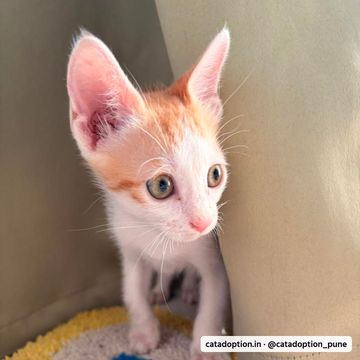
catadoption_puneAdoptable cats and kittens in Pune
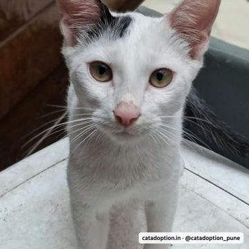
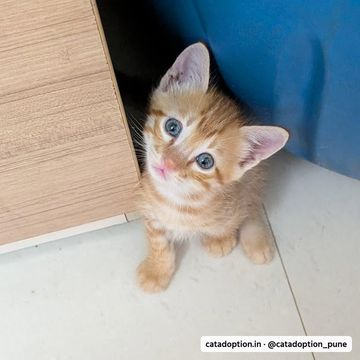
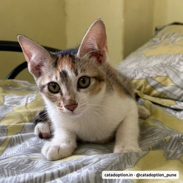
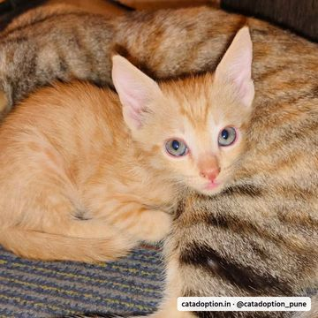
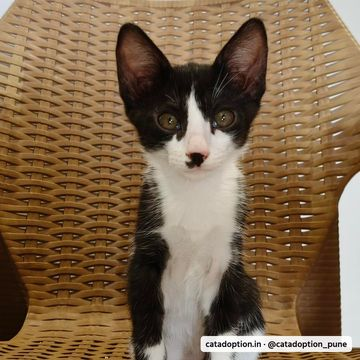
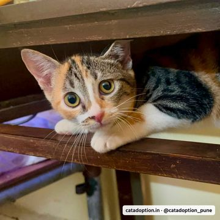
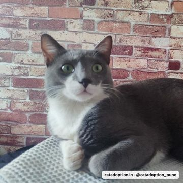
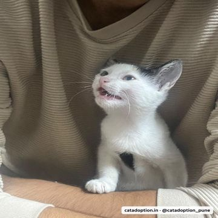
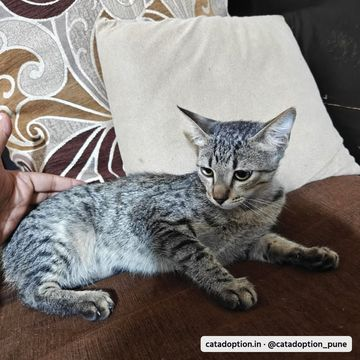
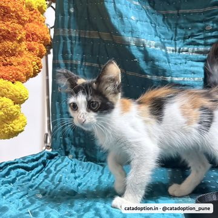
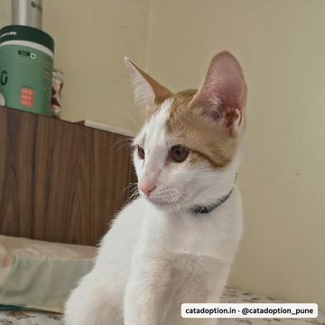
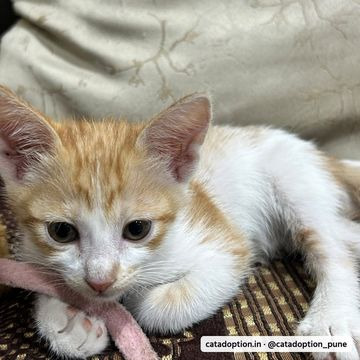
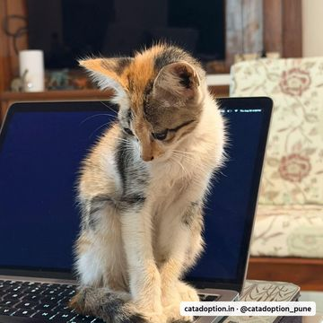
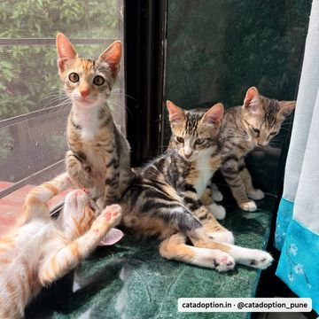
YouTube
The cats and the footage are mine. The drawings, titles and edits are made with AI, and I approve every cut before it goes up.
28 videos so far.
Open the channel
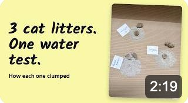
Which cat litter to buy in India?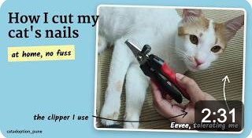
How to cut your cat's nails at home, no fuss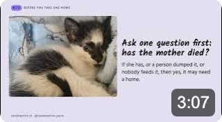
Found a kitten alone on an Indian street? Leave it be (usually)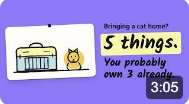
A new cat's first day home in India: 5 things to have ready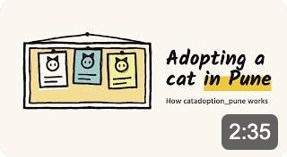
Adopting an Indie cat in Pune: how catadoption_pune works
The shop
Things I use for my own cats. The links earn me a small commission, and the page says so. Adoption itself never earns money.
Open the shop